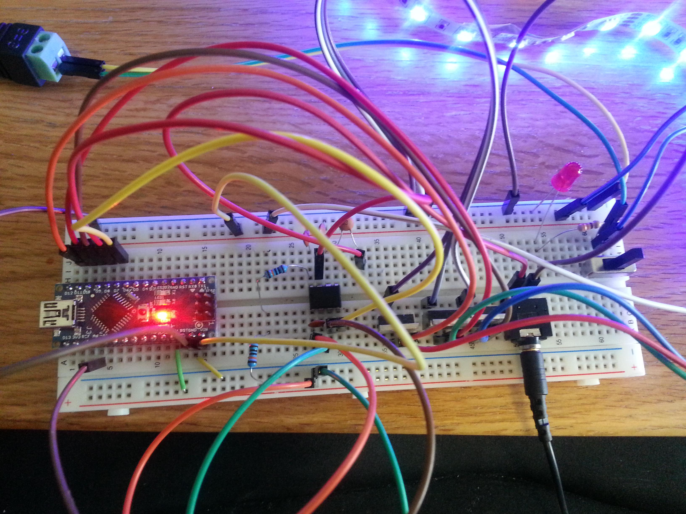
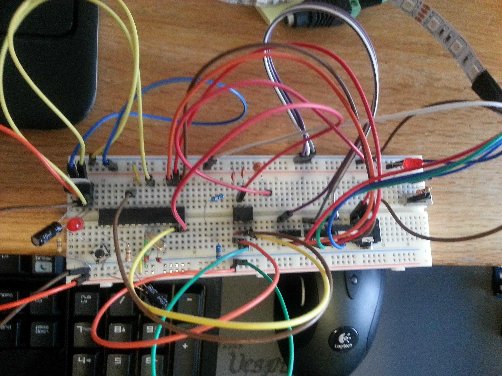
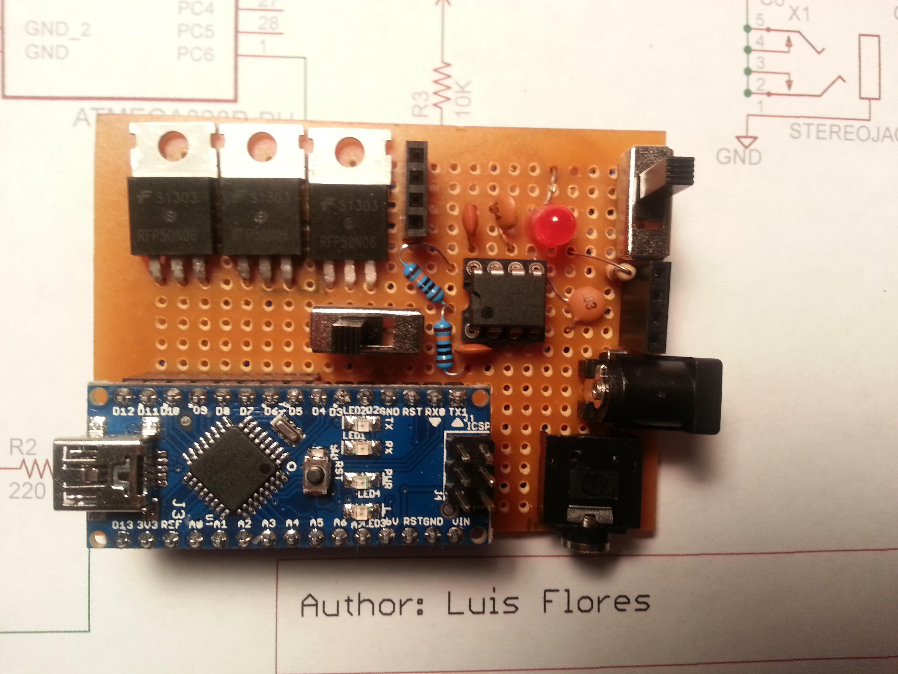
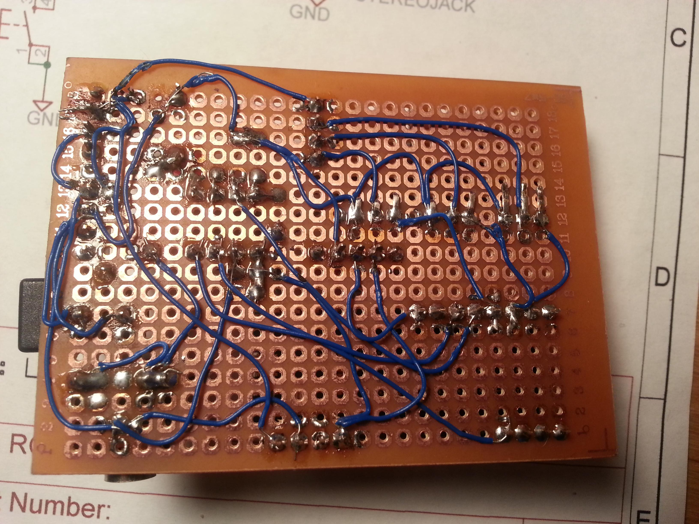

I really enjoyed working on this project because it was one of the first projects that gave me that "wow, I want to do that!" feeling when I first looked at it. It combines everything that I love: programming, sound and lights. Be sure to visit my Github page for this project to get the latest code and schematics. Or just keep reading!
Inspiration
Googling "color organ" turns up a plethora of tutorials for similar project ideas. I wanted to use the 5 meters of RGB LEDs I purchased on Amazon instead of discrete LEDs since that would serve as nice bias lighting for my desk. I also found out that the MSGEQ7 is quite a popular choice among music project enthusiasts. Combined with my trusty Arduino Nano, these components made this project a snap and gave me a great final result.
Design and Prototype
The schematic was straighforward. Using EAGLE and the Sparkfun library, I was able to use some reference designs to produce the MusLight. I quickly got a breadboarded prototype up and running. It was an awesome feeling seeing the music alter the light before my eyes.
 Arduino Nano Schematic.
Arduino Nano Schematic.
 Arduino Nano breadboarded prototype.
{kind=link}
Optimization
After working out some of the bugs of the initial prototype, I knew I wanted to make a more sturdy and permanent design. However, I felt that using a complete Arduino Nano, was probably not the most cost efficient option. Instead, I opted to create a barebones Arduino using an Atmega328p and crystal. I went back to the drawing board and came up with the following schematic and breadboard prototype.
 Barebones Atmega328p Schematic.
Barebones Atmega328p Schematic.
 Atmega328p-based breadboarded prototype.
{kind=link}
Loading the code into the Atmega was straighforward using Adafruit's AVR ISP Shield Kit. However, at this point in time I had already completed my PicFrame project. Although using the barebone Atmega was a more cost-efficient and space-saving design, it was simply not worth the extra manual assembly time. However, if I was to design a PCB for this project, I would definitely use the Atmega design.
Making the Perfboard
At last it was time to do my favorite part of the prototyping process: soldering! I busted out my trusty Hakko F888D and got to work. I opted for a modular design that would let me remove components easily off the board. This made the soldering process easier since it eliminated dangling components. It also allowed me to quickly alter the firmware since halfway into the perfboarding process I decided to also implement a moodlight-mode switch and the corresponding code. Updating the firmware was as easy as turning off the board power.
I began by placing the female headers for the Nano, followed by the MOSFETs, stereo jack, powerjack and switches. I decided to add another set of power headers in case I wanted to share the main power supply in the future. The final result is smaller than a credit card! Now that's some good board-level planning!
Overall, I really enjoyed working on this project. The effect is mesmerizing. It really takes listening to music to a whole new level. The MusLight currently lives behind my desk, happily chugging along with the LED strip around the back of my monitor. The moodlight mode is fantastic when programming or reading since it helps with vision strain.
 Final perfboard design, top view. One of my nicest looking boards to date.  Final perfboard design, bottom view. One of my nicest looking boards to date.{kind=link}
{kind=link}
Project Files
All schematics, EAGLE files, perfboard planning files and code can be found at my Github page for this project. If you enjoyed this project, be sure to star it on Github or send me a message. Be sure to check out my other projects over in the Projects page!